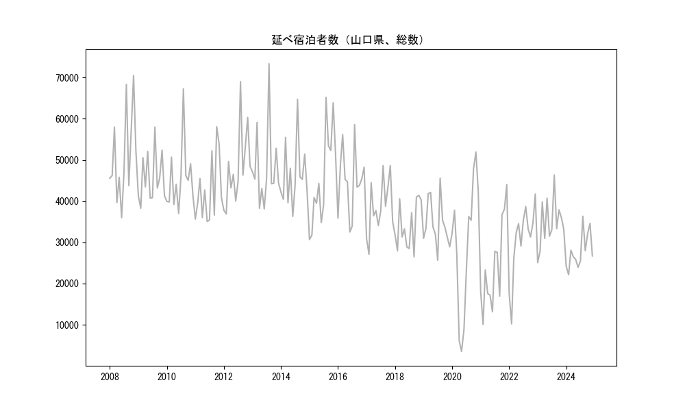
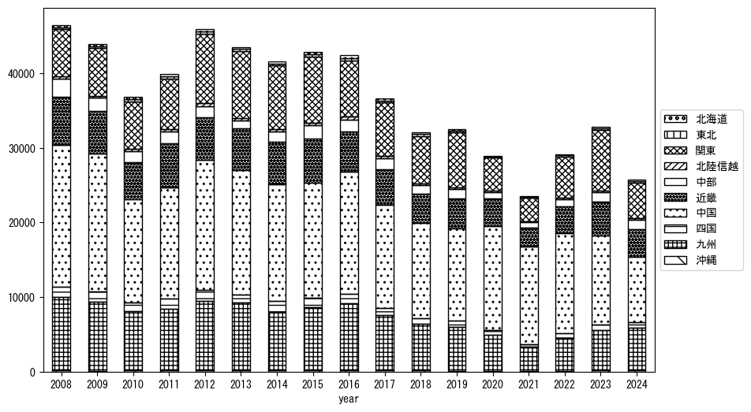
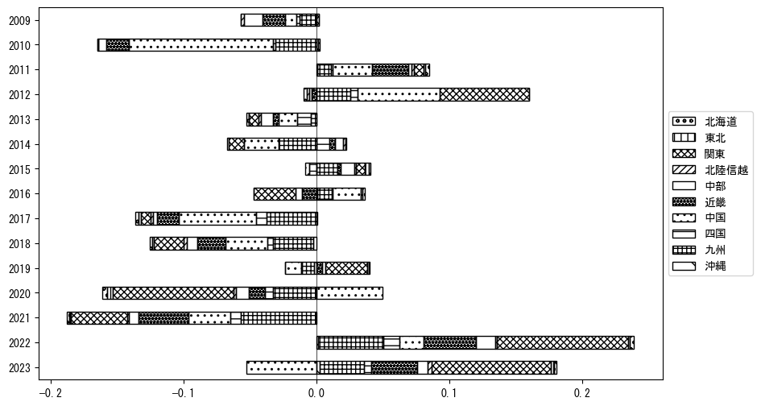
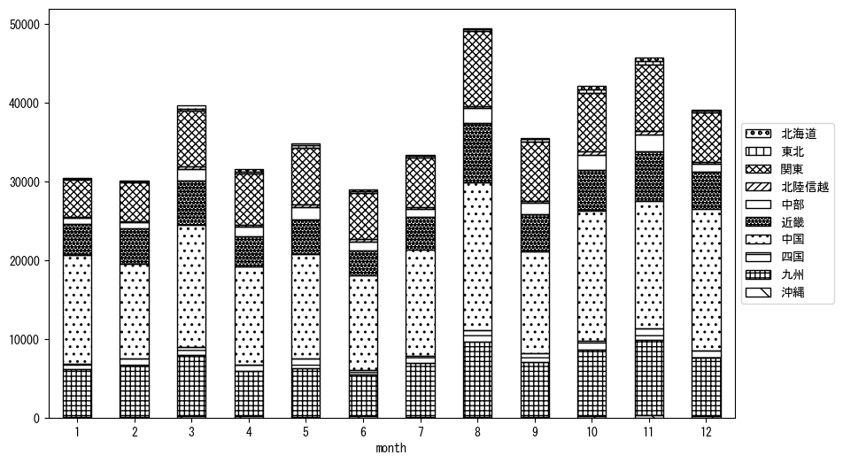
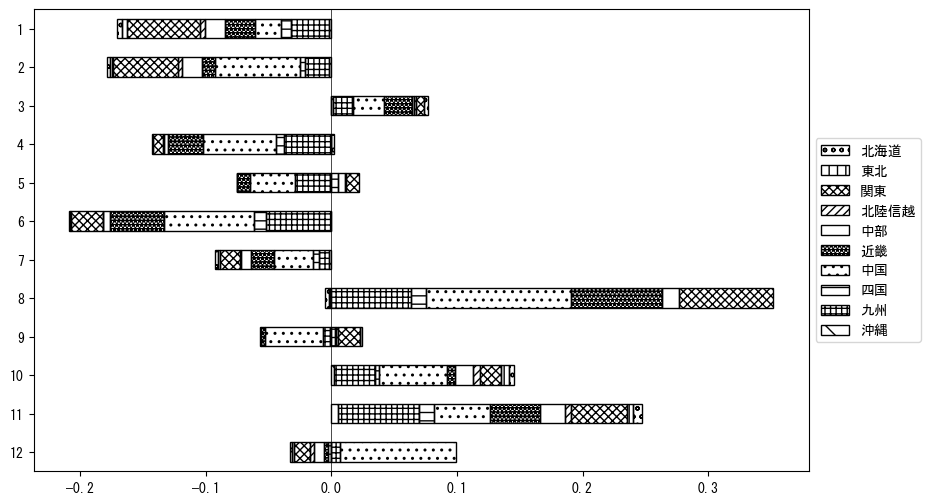

-
トップ
-
山口県
山口県
１．延べ宿泊者（総数）の推移
時系列グラフ

図１：山口県内の従業員数100人以上の宿泊施設での延べ宿泊者数（国外、居住地不詳を含む総数）。
基本統計量
表１：従業員数100人以上の宿泊施設での延べ宿泊者の総数（国外、および居住地不詳を含む）に関する基本統計量。単位は人泊。平均は１か月あたりの平均値を表す。図１に対応。
| 2008年 |
50,821 |
10,739 |
35,998 (6月) |
70,527 (11月) |
| 2009年 |
45,653 |
6,127 |
38,279 (2月) |
57,998 (8月) |
| 2010年 |
45,481 |
8,033 |
36,993 (6月) |
67,282 (8月) |
| 2011年 |
42,651 |
8,070 |
35,069 (6月) |
58,086 (10月) |
| 2012年 |
48,005 |
9,299 |
36,883 (2月) |
69,026 (8月) |
| 2013年 |
47,975 |
9,824 |
38,132 (6月) |
73,363 (8月) |
| 2014年 |
46,321 |
7,803 |
36,293 (6月) |
64,738 (8月) |
| 2015年 |
45,602 |
11,650 |
30,679 (1月) |
65,193 (8月) |
| 2016年 |
44,731 |
7,974 |
32,511 (6月) |
58,582 (8月) |
| 2017年 |
38,553 |
6,671 |
27,107 (2月) |
48,639 (11月) |
| 2018年 |
34,060 |
5,716 |
26,483 (9月) |
41,409 (11月) |
| 2019年 |
34,552 |
5,847 |
25,657 (7月) |
45,596 (8月) |
| 2020年 |
29,370 |
16,108 |
3,537 (5月) |
51,919 (11月) |
| 2021年 |
24,200 |
10,763 |
10,065 (2月) |
44,027 (12月) |
| 2022年 |
30,407 |
8,851 |
10,218 (2月) |
41,735 (12月) |
| 2023年 |
34,647 |
5,878 |
25,083 (1月) |
46,356 (8月) |
| 2024年 |
27,826 |
4,363 |
22,145 (2月) |
36,341 (8月) |
２．宿泊者数の重心（年平均の推移）
図２：山口県内の従業員数100人以上の宿泊施設での延べ宿泊者数（国外、居住地不詳を除く）の重心（年平均の推移）。
全画面表示
重心の前年平均からの移動距離と方位、および緯度・経度
表２：重心の前年平均からの移動距離と方位、および緯度・経度。図２に対応。
| 2008年 |
— |
— |
34.4534 |
133.5997 |
| 2009年 |
北 |
0.6km |
34.4590 |
133.6007 |
| 2010年 |
東北東 |
28.4km |
34.5094 |
133.9036 |
| 2011年 |
北 |
2.1km |
34.5279 |
133.9025 |
| 2012年 |
東 |
13.2km |
34.5472 |
134.0449 |
| 2013年 |
西南西 |
2.9km |
34.5344 |
134.0169 |
| 2014年 |
東北東 |
10.0km |
34.5572 |
134.1223 |
| 2015年 |
北東 |
3.7km |
34.5782 |
134.1535 |
| 2016年 |
西 |
26.1km |
34.5351 |
133.8738 |
| 2017年 |
東 |
14.0km |
34.5344 |
134.0268 |
| 2018年 |
北北東 |
3.2km |
34.5610 |
134.0394 |
| 2019年 |
東北東 |
21.1km |
34.6218 |
134.2570 |
| 2020年 |
西南西 |
55.7km |
34.4951 |
133.6698 |
| 2021年 |
西 |
29.3km |
34.4565 |
133.3546 |
| 2022年 |
東北東 |
49.8km |
34.5564 |
133.8831 |
| 2023年 |
東 |
56.8km |
34.6499 |
134.4915 |
| 2024年 |
西南西 |
48.3km |
34.5126 |
133.9924 |
運輸局別延べ宿泊者数
時系列（年平均）

図３：山口県内の従業員数100人以上の宿泊施設での１か月あたり平均延べ宿泊者数（国外、居住地不詳を除く）の運輸局別内訳。
寄与度（前年からの変化率に対する）

図４：山口県内の従業員数100人以上の宿泊施設での運輸局別延べ宿泊者数（国外、居住地不詳を除く）から求めた寄与度。
３．宿泊者数の重心（月別）
図５：山口県内の従業員数100人以上の宿泊施設での延べ宿泊者数（国外、居住地不詳を除く）の重心（月別）。観測期間は2008年1月から2024年12月まで。
全画面表示
全期間（2008年1月～2024年12月）の平均と月別平均の比較
表３：全期間の平均から月別平均までの移動距離と方位、および緯度・経度。図５に対応。
| 全期間 |
— |
— |
34.5347 |
133.9372 |
| 1月 |
西南西 |
37.9km |
34.4500 |
133.5376 |
| 2月 |
西南西 |
23.0km |
34.4664 |
133.7004 |
| 3月 |
北東 |
2.0km |
34.5456 |
133.9545 |
| 4月 |
東北東 |
15.7km |
34.5930 |
134.0931 |
| 5月 |
東北東 |
25.0km |
34.5998 |
134.1981 |
| 6月 |
東北東 |
6.3km |
34.5554 |
134.0011 |
| 7月 |
西南西 |
7.8km |
34.5065 |
133.8595 |
| 8月 |
東 |
9.1km |
34.5358 |
134.0360 |
| 9月 |
東 |
23.3km |
34.5707 |
134.1872 |
| 10月 |
北北東 |
4.0km |
34.5652 |
133.9609 |
| 11月 |
東北東 |
14.5km |
34.5607 |
134.0922 |
| 12月 |
西南西 |
29.6km |
34.4669 |
133.6260 |
運輸局別延べ宿泊者数
月別平均（2008年1月～2024年12月）

図６：山口県内の従業員数100人以上の宿泊施設での延べ宿泊者数（国外、居住地不詳を除く）の運輸局別内訳（月別）。
寄与度（全期間の平均から月別平均への変化率に対する）

図７：山口県内の従業員数100人以上の宿泊施設での運輸局別延べ宿泊者数（国外、居住地不詳を除く）から求めた寄与度（月別）。
４．データのダウンロード
出典：観光庁「宿泊旅行統計調査」に収録された「施設所在地、居住地別延べ宿泊者数（従業員数100人以上の施設）」
国土地理院「白地図（地理院タイル）」（図２と図５）